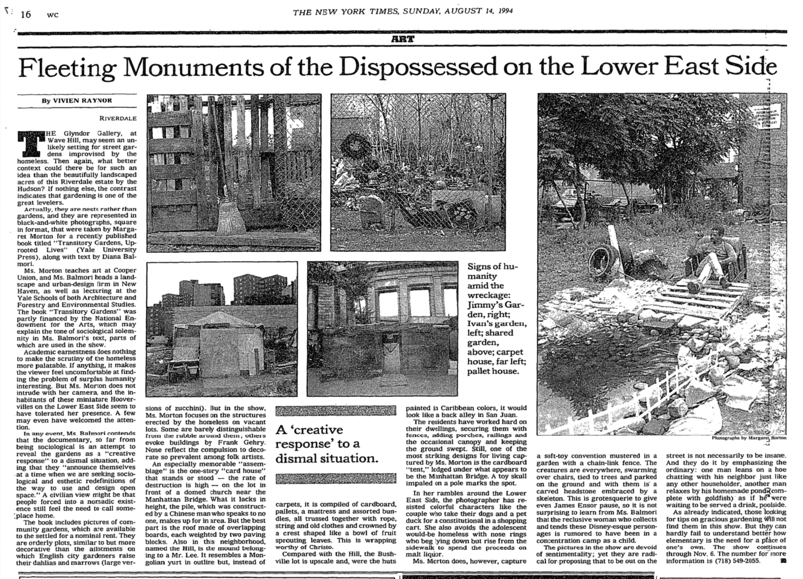
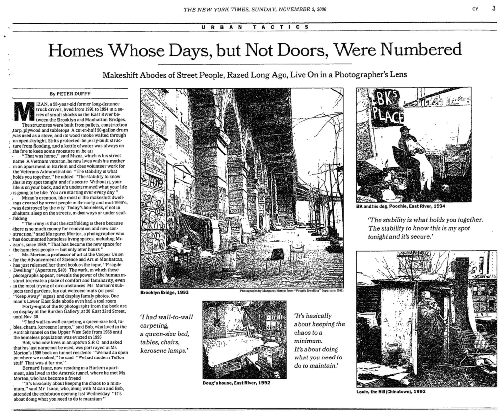
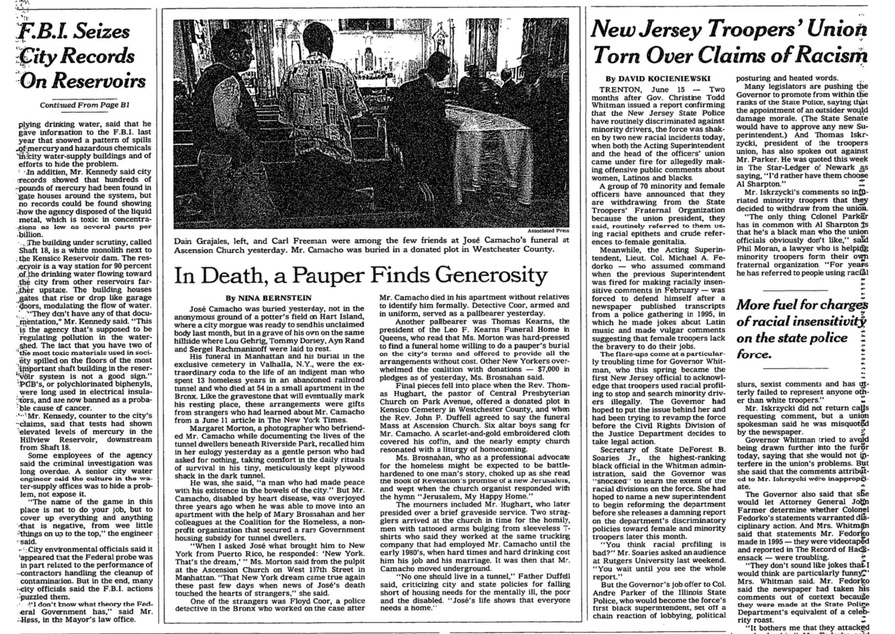
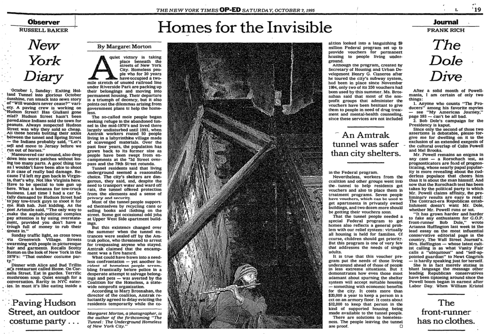

A frequent contributor to discourse on the housing crisis through mainstream publications such as The New York Times, Morton also published a number of essays in smaller publications. A limited selection of these writings appear here.



